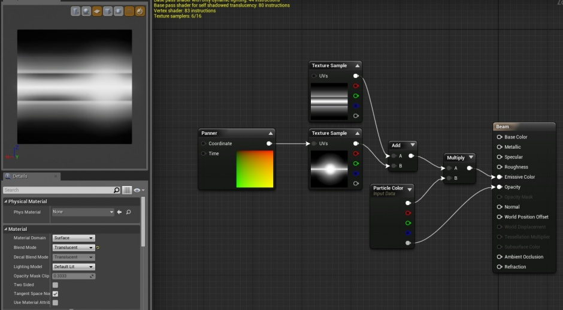
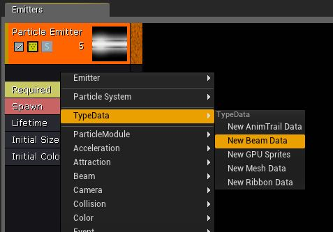
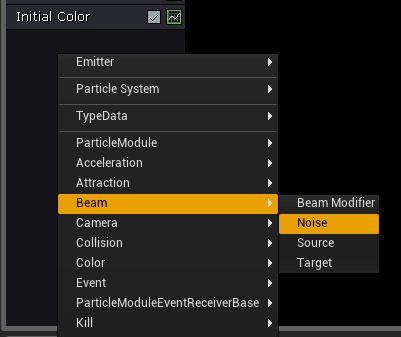
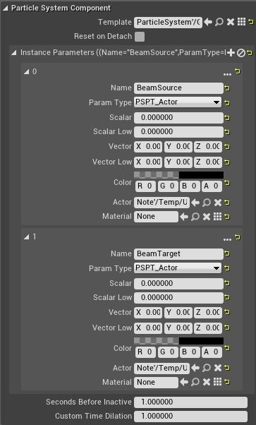
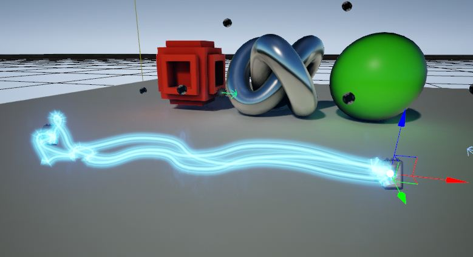
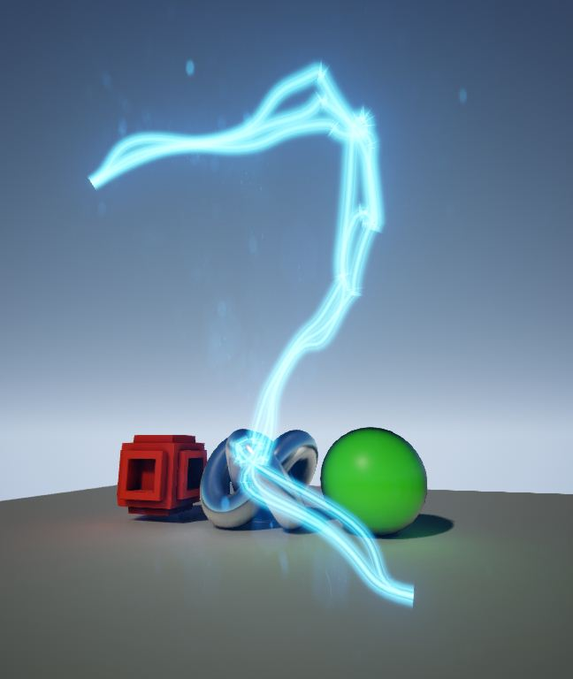

Система частиц в UE 4
Contents
Введение
Система частиц в Unreal Engine - это хорошая вещь, чтобы моделировать такие вещи, как:
- Лазеры, молнии;
- Дым, пар, огонь
- И так далее.
В этой статье вы узнаете о принципах работы с системами частиц в UE 4.
Шаг 1. Подготовка [править]
Во-первых, перед началом работы с частицей; является ли это или последствия того, что оружие (например, лазерные пушки и т.п.) требуется программирования, который выходит за рамки данного руководства. Теперь мы рассмотрим, как работать с ним эффектов. Что бы работать с частицами, мы нуждаемся в такой структуре. Как правило, точнее, как правило, требуется горизонтальная текстуру (например, как на скриншоте). В нашем примере мы создали простой материал, используя следующую структуру:


Эти текстуры объединены в следующие 'материала' :

После того как мы добавить этот пункт в новой системе частиц, мы готовы сосредоточиться на пучок частиц (на наших Пучко-образных частиц). Для начала, нам нужно добавить модуль луч. (Щелкните правой кнопкой мыши в 'эмиттер' и select TypeData > New-Beam Data . Модуль Beam TypeData щелкнув правой кнопкой мыши в эмиттере и выбор TypeData> Нью-Beam данных.

Это, чтобы создать наш луч. Для дальнейшей настройки, что бы получить что-то интересное. Используйте следующую таблицу, чтобы начать с того, что будет более подробное исследование пучка частиц.
| property | value | description |
|---|---|---|
| Lifetime Module | ||
| Lifetime | 0.0 | The life span of the beam. (Default is infinite) |
| Beam Data Module | ||
| Beam Method | PEB2M_Distance | The beam will be calculated via distance along the emitter's X-Axis, rather than requiring a source and target. |
| Texture Tile Distance | 500 | Tiles the texture every 500 Unreal Units. Allows animated pulses to show more clearly. |
| Max Beam Count | 3 | Adds in a few more beams, which will look nice once we have noise. |
| Speed | 0 | Beam will travel instantly to its target. |
| Interpolation Points | 50 | Gives the beam some flexibility for the addition of noise, which we will do later. |
| Distance | 1000 | Extends the beam 1000 Unreal Units along the X-Axis, giving us something to work with. |
Once you have set up the beam. Your beam will look like this:

Step 2: Add effects. noise
Ваше луч может быть более интересным, вы можете добавить немного шума - искажение. Это делается с помощью модуля 'Noise' . Он расположен в подменю Луч > Шум .

Используйте следующую таблицу, чтобы изменить различные свойства:
| Properties | Values | Descriptions |
|---|---|---|
| Frequency | 30 | Gives us a nice amount of noise. Adjust to taste. |
| Low Freq Enabled | Checked | Enables randomization of noise points. |
| Noise Range | Vector Uniform distribution. Min:( 0, -50, -50) Max:( 0, 50, 50) | Tells the noise how far it can move away from the beam. |
| Noise Tessellation | 10 | Smoothes out the noise. |
| Frequency Distance | 100 | Rounds out the shape of the noise. |
Вот пример результат нашей работы.

Используйте различные свойств и их значений, которые диверсификации вашу работу.
Шаг 3 источника и назначения
Если вы хотите, что бы ваша пучок имел разную длину вдоль одной оси, эта часть урока для вас.

К сожалению, этот способ не всегда хорошо; В некоторых случаях, вам нужно будет указать начальную и конечную точки, а также контролировать процесс между ними. Это можно сделать с помощью «захвата цели» (источник и цель).
Для начала, мы добавили двух актеров на сцене, что бы они быть использованы в качестве начальных и конечных положениях. В этом случае, мы будем использовать Замечание актеров.

Вернуться к Cascade, добавьте Источник модуля i Target для вашей излучателя. Они оба в суб-луча.

Модули Тип луча данных, источник и цель, установите следующие параметры:
| Property | Value | Reason |
|---|---|---|
| Beam Data Module | ||
| Beam Method | PEB2M_Target | Extablishes that the beam will require a source and a target. |
| Source Module | ||
| Source Method | PEB2STM_Actor | Tells the beam to start at the location of an actor. |
| Source Name | BeamSource | Tells the beam to start at the location of an actor. |
| Source | Vector Constant Distribution. Value:(0, 0, 0) | This sets the display source in the Preview window to be 0,0,0. |
| Target Module | ||
| Target Method | PEB2STM_Actor | Tells the beam to end at the location of an actor. |
| Target Name | BeamTarget | This is just a parameter name and can be anything you like. |
| Target | Vector Constant Distribution. Value:(1000, 0, 0) | This sets the display target in the Preview window to be 1000,0,0. |
Ваше луч не изменится, но теперь он будет иметь начальную и конечную точки луча - сегмент.
Настройка исходного и целевого параметра луча
Чтобы луч использовать Note actor, как источник и цель, мы должны установить их в качестве параметров, например, для эмиттера актера. После того, как вы принесли эмиттер луча на сцену, выполните следующие действия:
- Настройте 2 параметра экземпляра на эмиттере актора. Назовите BeamSource и BeamTarget.
- Установка и их Тип в PSPT_Actor .
- Установите один из Note Actor в поле Actor каждого параметра.
Когда закончите, ваша панель должна выглядеть примерно так:

Ваш луч в настоящее время движется между двумя Note actor-ами:

Note
Вы можете сделать намного интереснее, чем балки, регулируя касательные источника и цели.

Русское сообщество Unreal Engine 4
Русское сообщество Unreal Engine 4